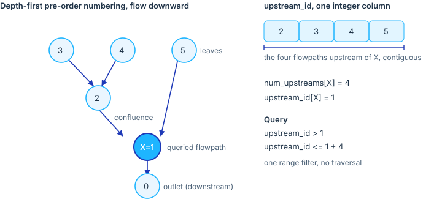

Most queries against a hydrofabric are upstream queries: what drains to a gage, which catchments contribute to a reservoir, which reaches a subset needs to be hydrologically complete above a point. Answering by traversal is correct but costs a full graph walk per query.
add_upstream_index() precomputes the answer once, at
build time, and stores it as two integer columns so that “everything
upstream of X” becomes a single integer range filter. No traversal at
query time.
The idea: a nested set
The routed network is a tree. Each flowpath has exactly one
downstream (a single toid), so following flow downstream
always converges, and following it upstream fans out into a branching
structure rooted at each outlet. Confluences, where many reaches join
one, are everywhere; divergences, where one reach splits into two, are
not present, because the data model stores a single downstream per
feature.
A tree admits a classic encoding, the nested set model. Number the flowpaths in a depth-first pre-order walk from each outlet up its network. Because the walk descends a whole branch before moving to the next, every flowpath and all of its upstream contributors receive a contiguous run of numbers. Record two values per flowpath:
-
upstream_id: the pre-order position in that walk. -
num_upstreams: the count of flowpaths strictly upstream (the size of its contributing network).
The flowpaths strictly upstream of a flowpath X are then
exactly those whose upstream_id falls in the half-open
interval
(upstream_id[X], upstream_id[X] + num_upstreams[X]]One comparison on one indexed integer column returns the entire upstream network. The technique is adapted from Josh Cunningham’s upstream-index work (DOI 10.5281/zenodo.21518730).

Using it
The index is added during finalize_data_model(), so
every product carries it. The values live on flowpaths and
are denormalized onto flowlines, divides, and
network by flowpath_id, so a feature on any
layer resolves to its flowpath’s upstream network.
To list everything upstream of a flowpath, read its two values and filter:
library(DBI)
con <- dbConnect(RSQLite::SQLite(), "superconus_ngen.gpkg")
anchor <- dbGetQuery(con,
"SELECT upstream_id AS u, num_upstreams AS n
FROM flowpaths WHERE flowpath_id = 'fp-8'")
upstream <- dbGetQuery(con, sprintf(
"SELECT flowpath_id FROM flowpaths
WHERE upstream_id > %d AND upstream_id <= %d",
anchor$u, anchor$u + anchor$n))The same filter selects upstream divides, or the upstream routing
reaches, by running it against those layers. Two features nest when one
interval contains the other, so A is upstream of
B exactly when A’s interval sits inside
B’s. A range query costs one index seek regardless of how
large the contributing network is.
What to keep in mind
upstream_id is build-specific. It is a position in one
traversal of one network, so it is reassigned whenever the topology
changes and must not be used as a persistent key. It accompanies the
canonical flowpath_id; it never replaces it.
The encoding is exact only for a tree.
add_upstream_index() warns if a flowpath falls outside its
downstream’s interval, and skips a network that is not acyclic rather
than writing a misleading index.